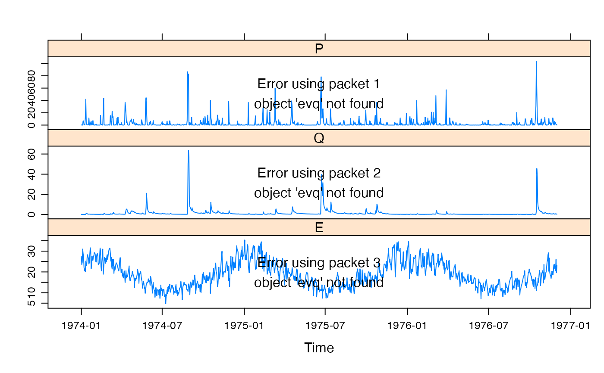

Identify discrete events from time series and apply functions to them.
findThresh(
x,
thresh = NA,
n,
within = (n%/%20) + 1,
mingap = 1,
mindur = 1,
below = FALSE,
...,
trace = FALSE,
optimize.tol = 0.1
)
eventseq(
x,
thresh = 0,
mingap = 1,
mindur = 1,
extend = 0,
inthresh = thresh,
inx = x,
indur = 1,
below = FALSE,
all = FALSE,
continue = FALSE,
n = NA
)
eventapply(
X,
events,
FUN = sum,
...,
by.column = TRUE,
simplify = TRUE,
TIMING = c("start", "middle", "end")
)
eventinfo(X, events, FUN = mean, ...)a ts or zoo object. May be
multivariate, i.e. have multiple columns.
threshold value: the data must be strictly above this level
(or, if below = TRUE, below this level) to define an event. If
x is a matrix (with multiple columns), thresh is allowed to be
a vector with one value per column. In this case, events continue while any
series exceeds the threshold. Finally, thresh can be a full matrix or
vector of the same dimension as x. Any missing values are treated as
below the threshold.
number of events to be identified: if this is given (and > 0), then
a value of thresh is estimated such that about this many events are
returned. A warning is given if the actual number of events is not within 5
percent of n. Note that there may be multiple possible threshold
levels giving the same number of events!
Placeholder
the minimum number of time steps that can separate events. Any inter-event durations shorter than this will be subsumed into the surrounding event.
the minimum number of time steps in each event window. Any events whose duration is shorter than this will be skipped.
reverses the definition of events, to identify events where the
data falls below thresh (and/or inthresh). Setting this to
TRUE is equivalent to negating x and thresh, etc.
Placeholder
Placeholder
Placeholder
a number of time steps to include on the end of each event
window, before accounting for inthresh. If this causes events to run
into following events they will be merged.
inthresh gives a second threshold value to define
when events stop: after an event is initiated by exceeding thresh, it
continues until the second (lower) threshold inthresh is reached (for
at least indur steps). If missing or NULL, it defaults to
thresh. As with thresh, inthresh is allowed to be a
vector with values corresponding to the columns of inx.
optionally, a different series may be given to determine event
termination with inthresh. E.g. an input series may define event
starts and a response series may define when they end. If missing or
NULL, defaults to x. As with x, this is allowed to be
a matrix.
the series must remain below inthresh for this many time
steps in order to terminate an event.
to include the periods between events as additional levels (i.e.
as events in themselves). These inter-events will be assigned negative
levels, while the actual events will have positive levels. Otherwise -- in
the default case -- these inter-event periods are left as NA.
set continue = TRUE to extend each event until the
following event; otherwise there are gaps between events (the default
behaviour). This has no effect if all = TRUE.
a factor-like object, perhaps ts or
zoo. Its levels (unique values) define events, and NA
values are ignored. If events is a factor or vector, its values are
assumed to correspond to X; otherwise, it is assumed to be a time
series object and is merged (cbinded) with X.
a function to apply to the values in each event. In the default
case of by.column = TRUE, FUN will be passed a vector of
values from one column of X. When by.column = FALSE, which
only makes sense when X is a matrix, FUN will be passed a
matrix. The dots (...{}) are passed on too.
a function to apply to the values in each event. In the
default case of by.column = TRUE, FUN will be passed a vector
of values from one column of X. When by.column = FALSE, which
only makes sense when X is a matrix, FUN will be passed a
matrix. The dots (...{}) are passed on too.
if FALSE, the result will be returned as a list with
one (named) element for each event, rather than a time series like object.
This case allows FUN to return a complex object or vectors of
variable lengths.
defines how to construct the time index of the result. Should
the time corresponding to an event be taken from the time() of its
start, middle, or end?
eventseq returns a zoo object, with core data consisting of an
ordered factor, representing the identified events, and the
same time index as x. Periods between events are left as NA,
unless all = TRUE in which case they are treated as separate events.
The returned object stores thresh as an attribute.
eventapply returns a zoo object (an irregular time series in
this case), with the value returned from FUN applied to each discrete
event in X.
eventinfo returns a data.frame with columns
time that the event started (from time(X)).
month and year (as integers) of the mid-point of the event.
result of FUN applied to the
event.
length of the event in time steps / data points.
number of time steps since the last event ended.
cut.Date, tapply,
rollapply, aggregate.zoo,
panel.xblocks, clusters in the evd package.
data(Queanbeyan)
## wet period
x <- window(Queanbeyan, start = "1974-01-01", end = "1976-12-01")
evp <- eventseq(x$P, thresh = 5, inthresh = 1, indur = 4, continue = TRUE)
evq <- eventseq(x$Q, thresh = 2, indur = 4, mingap = 5)
nlevels(evp) ## number of events
#> [1] 46
nlevels(evq)
#> [1] 15
str(evq)
#> ‘zoo’ series from 1974-01-01 to 1976-12-01
#> Data: Ord.factor w/ 15 levels "1974-04-11"<"1974-05-26"<..: NA NA NA NA NA NA NA NA NA NA ...
#> - attr(*, "thresh")= num 2
#> Index: Date[1:1066], format: "1974-01-01" "1974-01-02" "1974-01-03" "1974-01-04" "1974-01-05" ...
table(coredata(evq))
#>
#> 1974-04-11 1974-05-26 1974-08-28 1974-10-06 1974-11-03 1974-11-28 1975-02-13
#> 23 21 21 23 8 4 4
#> 1975-03-12 1975-04-18 1975-06-22 1975-09-30 1975-10-22 1976-03-06 1976-03-29
#> 7 11 35 7 16 5 4
#> 1976-10-16
#> 24
eventapply(x$Q, evq, FUN = sum)
#>
#> 1974-04-11 61.193872
#> 1974-05-26 84.338863
#> 1974-08-28 246.699163
#> 1974-10-06 67.231001
#> 1974-11-03 17.926174
#> 1974-11-28 8.389933
#> 1975-02-13 4.265131
#> 1975-03-12 19.155832
#> 1975-04-18 34.544366
#> 1975-06-22 282.771210
#> 1975-09-30 18.973563
#> 1975-10-22 53.756692
#> 1976-03-06 10.439458
#> 1976-03-29 5.950296
#> 1976-10-16 153.327577
eventapply(x, evq, FUN = mean)
#> P Q E
#> 1974-04-11 4.140000 2.660603 18.01739
#> 1974-05-26 4.830476 4.016136 13.95238
#> 1974-08-28 9.022381 11.747579 13.90476
#> 1974-10-06 4.326087 2.923087 17.16957
#> 1974-11-03 2.736250 2.240772 19.26250
#> 1974-11-28 1.470000 2.097483 18.92500
#> 1975-02-13 0.275000 1.066283 24.05000
#> 1975-03-12 3.247143 2.736547 23.11429
#> 1975-04-18 4.980000 3.140397 18.45455
#> 1975-06-22 6.952857 8.079177 11.70857
#> 1975-09-30 4.811429 2.710509 17.15714
#> 1975-10-22 5.623750 3.359793 18.93750
#> 1976-03-06 0.362000 2.087892 25.34000
#> 1976-03-29 0.085000 1.487574 22.50000
#> 1976-10-16 9.573750 6.388649 17.43750
eventinfo(x$Q, evq)
#> Time Month Year Value Duration PreDuration
#> 1 1974-04-11 4 1974 2.660603 23 100
#> 2 1974-05-26 6 1974 4.016136 21 22
#> 3 1974-08-28 9 1974 11.747579 21 73
#> 4 1974-10-06 10 1974 2.923087 23 18
#> 5 1974-11-03 11 1974 2.240772 8 5
#> 6 1974-11-28 11 1974 2.097483 4 17
#> 7 1975-02-13 2 1975 1.066283 4 73
#> 8 1975-03-12 3 1975 2.736547 7 23
#> 9 1975-04-18 4 1975 3.140397 11 30
#> 10 1975-06-22 7 1975 8.079177 35 54
#> 11 1975-09-30 10 1975 2.710509 7 65
#> 12 1975-10-22 10 1975 3.359793 16 15
#> 13 1976-03-06 3 1976 2.087892 5 120
#> 14 1976-03-29 3 1976 1.487574 4 18
#> 15 1976-10-16 10 1976 6.388649 24 197
evplot <- xyplot(x) +
latticeExtra::layer(panel.xblocks(evq, block.y = 0, vjust = 1, col = 1)) +
latticeExtra::layer(panel.xblocks(evp, col = c("grey90", "grey80"), border = "grey80"))
evplot

update(evplot,
type = "s",
xlim = as.Date(c("1990-07-01", "1990-08-31"))
) +
latticeExtra::layer(panel.abline(h = c(5, 1), lty = 2), packets = 1)
## example of requesting a threshold giving about 'n' events
set.seed(0)
ee <- eventseq(rnorm(100), n = 10, mingap = 2)
nlevels(ee)
#> [1] 12
attr(ee, "thresh")
#> [1] 0.8700171
##
## example of classifying events based on hydro properties
##
data(Queanbeyan)
x <- window(Queanbeyan, start = "1974-01-01", end = "1976-12-01")
e <- eventseq(x$P, thresh = 5, inthresh = 1, indur = 4, continue = TRUE)
## classify events based on max flow
qclass <- cut(
ave(coredata(x$Q), coredata(e), FUN = max),
c(0, 0.5, 1, Inf)
)
qclass <- zoo(qclass, time(x))
## Classify events based on antecedent flow
x <- merge(x, Q1 = lag(x$Q, -1), all = c(TRUE, FALSE))
head1 <- function(z) z[1]
q1class <- cut(
ave(coredata(x$Q1), coredata(e), FUN = head1),
c(0, 0.2, 0.3, Inf)
)
q1class <- zoo(q1class, time(x))
## combined classification
combin <- factor(paste("M", unclass(qclass), "_A", unclass(q1class), sep = ""))
combin <- zoo(combin, time(x))
## check results
head(data.frame(x, event = unclass(e), qclass, q1class, combin), 50)
#> P Q E Q1 event qclass q1class combin
#> 1974-01-01 0.23 0.13463314 27.4 NA NA (0,0.5] <NA> M1_ANA
#> 1974-01-02 0.09 0.12339318 23.6 0.13463314 NA (0,0.5] (0,0.2] M1_A1
#> 1974-01-03 0.04 0.10375941 24.7 0.12339318 NA (0,0.5] (0,0.2] M1_A1
#> 1974-01-04 0.02 0.09416382 31.0 0.10375941 NA (0,0.5] (0,0.2] M1_A1
#> 1974-01-05 6.95 0.09620114 28.8 0.09416382 1 (1,Inf] (0,0.2] M3_A1
#> 1974-01-06 6.64 0.11845820 27.4 0.09620114 1 (1,Inf] (0,0.2] M3_A1
#> 1974-01-07 0.30 0.13629400 22.2 0.11845820 1 (1,Inf] (0,0.2] M3_A1
#> 1974-01-08 0.44 0.11293633 20.6 0.13629400 1 (1,Inf] (0,0.2] M3_A1
#> 1974-01-09 0.53 0.09555984 21.5 0.11293633 1 (1,Inf] (0,0.2] M3_A1
#> 1974-01-10 12.78 0.09594437 20.1 0.09555984 1 (1,Inf] (0,0.2] M3_A1
#> 1974-01-11 41.88 0.15686031 25.2 0.09594437 1 (1,Inf] (0,0.2] M3_A1
#> 1974-01-12 4.07 1.30403449 23.0 0.15686031 1 (1,Inf] (0,0.2] M3_A1
#> 1974-01-13 1.15 0.94830673 23.0 1.30403449 1 (1,Inf] (0,0.2] M3_A1
#> 1974-01-14 0.16 0.79992143 27.3 0.94830673 1 (1,Inf] (0,0.2] M3_A1
#> 1974-01-15 0.60 0.57319898 28.3 0.79992143 1 (1,Inf] (0,0.2] M3_A1
#> 1974-01-16 0.49 0.42723959 27.1 0.57319898 1 (1,Inf] (0,0.2] M3_A1
#> 1974-01-17 0.30 0.36370408 26.6 0.42723959 1 (1,Inf] (0,0.2] M3_A1
#> 1974-01-18 11.60 0.36401796 23.8 0.36370408 2 (0,0.5] (0.3,Inf] M1_A3
#> 1974-01-19 0.00 0.48045980 24.7 0.36401796 2 (0,0.5] (0.3,Inf] M1_A3
#> 1974-01-20 0.00 0.35842694 28.6 0.48045980 2 (0,0.5] (0.3,Inf] M1_A3
#> 1974-01-21 0.07 0.31065898 31.6 0.35842694 2 (0,0.5] (0.3,Inf] M1_A3
#> 1974-01-22 4.04 0.27878898 30.1 0.31065898 2 (0,0.5] (0.3,Inf] M1_A3
#> 1974-01-23 6.23 0.26197143 21.5 0.27878898 2 (0,0.5] (0.3,Inf] M1_A3
#> 1974-01-24 0.27 0.28763367 23.5 0.26197143 2 (0,0.5] (0.3,Inf] M1_A3
#> 1974-01-25 0.08 0.28434714 27.6 0.28763367 2 (0,0.5] (0.3,Inf] M1_A3
#> 1974-01-26 1.56 0.26151612 25.7 0.28434714 2 (0,0.5] (0.3,Inf] M1_A3
#> 1974-01-27 7.35 0.24195347 25.6 0.26151612 2 (0,0.5] (0.3,Inf] M1_A3
#> 1974-01-28 0.16 0.29156061 27.6 0.24195347 2 (0,0.5] (0.3,Inf] M1_A3
#> 1974-01-29 0.84 0.29442918 27.6 0.29156061 2 (0,0.5] (0.3,Inf] M1_A3
#> 1974-01-30 0.00 0.25237898 29.3 0.29442918 2 (0,0.5] (0.3,Inf] M1_A3
#> 1974-01-31 0.07 0.21963102 28.8 0.25237898 2 (0,0.5] (0.3,Inf] M1_A3
#> 1974-02-01 0.13 0.20013500 28.7 0.21963102 2 (0,0.5] (0.3,Inf] M1_A3
#> 1974-02-02 0.26 0.18751173 25.6 0.20013500 2 (0,0.5] (0.3,Inf] M1_A3
#> 1974-02-03 1.57 0.17943418 24.7 0.18751173 2 (0,0.5] (0.3,Inf] M1_A3
#> 1974-02-04 0.00 0.18278212 27.2 0.17943418 2 (0,0.5] (0.3,Inf] M1_A3
#> 1974-02-05 0.00 0.17559412 28.6 0.18278212 2 (0,0.5] (0.3,Inf] M1_A3
#> 1974-02-06 0.07 0.16520800 28.8 0.17559412 2 (0,0.5] (0.3,Inf] M1_A3
#> 1974-02-07 0.00 0.15530741 27.3 0.16520800 2 (0,0.5] (0.3,Inf] M1_A3
#> 1974-02-08 0.00 0.15161763 23.4 0.15530741 2 (0,0.5] (0.3,Inf] M1_A3
#> 1974-02-09 0.08 0.14579692 23.7 0.15161763 2 (0,0.5] (0.3,Inf] M1_A3
#> 1974-02-10 0.00 0.14327378 24.2 0.14579692 2 (0,0.5] (0.3,Inf] M1_A3
#> 1974-02-11 0.00 0.14078865 27.4 0.14327378 2 (0,0.5] (0.3,Inf] M1_A3
#> 1974-02-12 0.07 0.13529824 31.5 0.14078865 2 (0,0.5] (0.3,Inf] M1_A3
#> 1974-02-13 15.64 0.14024280 30.4 0.13529824 3 (0.5,1] (0,0.2] M2_A1
#> 1974-02-14 1.77 0.52583429 22.6 0.14024280 3 (0.5,1] (0,0.2] M2_A1
#> 1974-02-15 0.99 0.29722367 20.5 0.52583429 3 (0.5,1] (0,0.2] M2_A1
#> 1974-02-16 0.40 0.18383243 24.8 0.29722367 3 (0.5,1] (0,0.2] M2_A1
#> 1974-02-17 0.05 0.16830888 27.7 0.18383243 3 (0.5,1] (0,0.2] M2_A1
#> 1974-02-18 0.07 0.15577520 31.0 0.16830888 3 (0.5,1] (0,0.2] M2_A1
#> 1974-02-19 20.94 0.14065600 18.9 0.15577520 4 (1,Inf] (0,0.2] M3_A1
## number of events in each class
each.e <- !duplicated(e)
table(coredata(combin[each.e]))
#>
#> M1_A1 M1_A2 M1_A3 M1_ANA M2_A1 M2_A2 M2_A3 M3_A1 M3_A2 M3_A3
#> 3 2 1 1 3 2 7 6 3 19